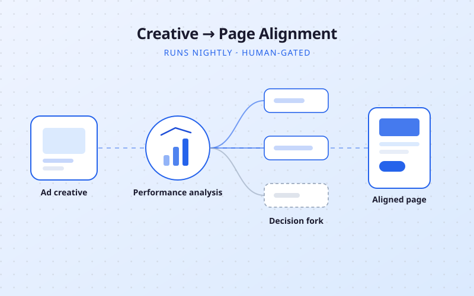
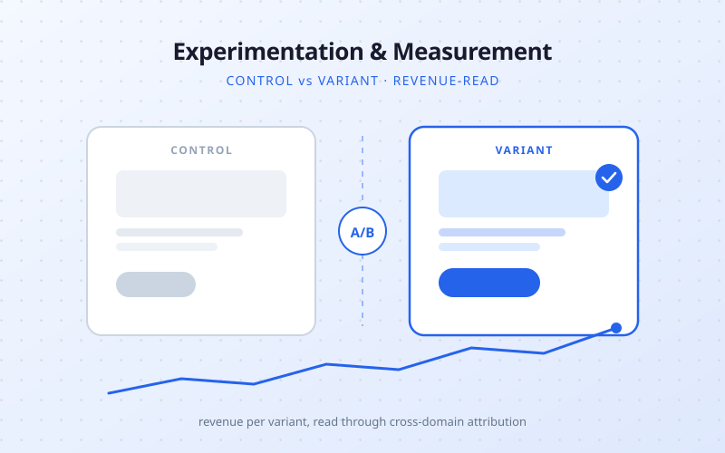
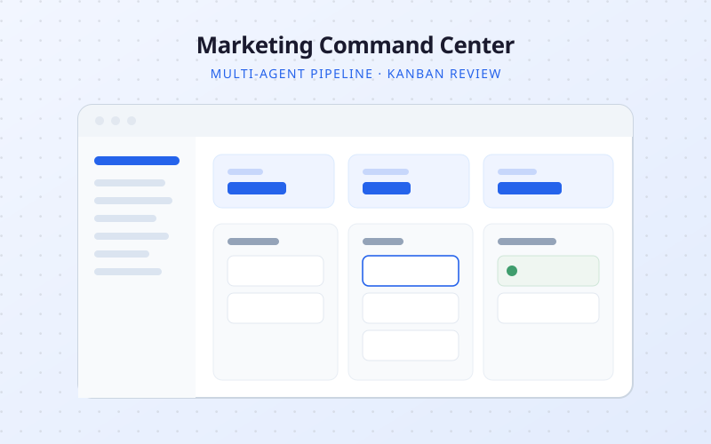

Hey, I am
Emily
You can call me
Em


Currently based in
Tulsa, OK
Off to next
TBD ✈
Conversion & Growth Engineer
I build the systems → that make pages convert & the automation ∞ underneath them
I build the systems → that make pages convert & the automation ∞ underneath them



Read Case StudyAd creative iterates daily, landing pages iterate quarterly. An autonomous system that closes that gap overnight — with confidence gates and a human review line.
View Case Study
Read Case StudyA repeatable testing program on a stack that fights you — plus the cross-domain attribution fix that made revenue-per-variant readable for the first time.
View Case Study
Read Case StudyAn in-house growth operating system: consolidated data, scoped agents, generated work, and every recommendation routed to a human review board.
View Case Study Read Case Study
Read Case Study
Full UX overhaul for UNCOMN driving 42% organic traffic growth and 22% lower bounce rate through strategic restructuring.
View Case Study Read Case Study
Read Case Study
Modern identity system honoring legacy while emotionally connecting with new clients across digital and print.
View Case Study Read Case Study
Read Case Study
Full visual identity and marketing rollout for a Gen Z prayer journaling app — from logo to launch.
View Case Study Read Case Study
Read Case Study
Technical audit and implementation driving 28% traffic growth and 36% speed improvement with perfect Lighthouse scores.
View Case Study Read Case Study
Read Case Study
Quarterly campaign system with content calendars, templates, and KPI dashboards for B2B tech marketing.
View Case Study Read Case Study
Read Case Study
Bold first impressions with scroll-based engagement and conversion-focused CTAs across multiple industries.
View Case StudyI take a small number of projects alongside my full-time role — usually one at a time. I hold Fridays for client work, so calls and turnarounds happen during business hours, not just evenings.
A diagnostic of where your funnel leaks, a prioritized test backlog scored by impact and effort, and a working session to walk through it.
GA4 and GTM rebuilt properly — dataLayer architecture, conversion tracking, cross-domain checkouts, and validation in DebugView so you can trust the numbers you optimize against.
Hypothesis through production test code through revenue readout. I write the variant code myself, so it's not a strategy deck you then have to staff.
A reporting pipeline, creative analysis system, or creative-to-page alignment engine — built on your infrastructure, owned outright. No revenue share, no platform lock-in.
That's my favorite kind of problem. Tell me what's going on and I'll tell you honestly whether I can help.
CRO audit tool that analyzes landing pages for CTA placement, trust signals, UX structure, speed, and mobile readiness — with actionable recommendations.
SaaS ToolAI-powered luxury travel itinerary app with flight deal tracking, budget tools, and a Claude-powered AI companion for personalized recommendations.
Travel AppAutomated outreach pipeline scraping Google Maps for SMBs, scoring leads, auto-sending cold emails, and managing everything through a custom CRM dashboard.
Automation